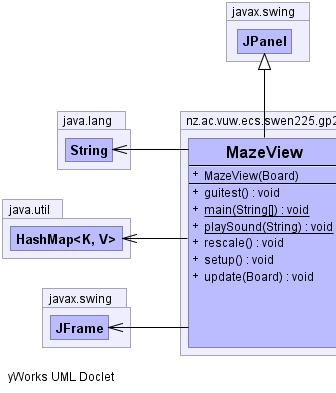
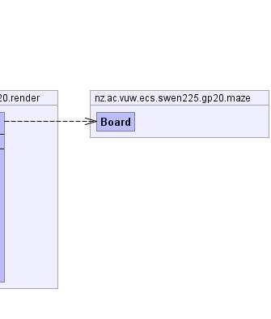

public class MazeView
extends javax.swing.JPanel
|  |  |
TOOL_TIP_TEXT_KEY, UNDEFINED_CONDITION, WHEN_ANCESTOR_OF_FOCUSED_COMPONENT, WHEN_FOCUSED, WHEN_IN_FOCUSED_WINDOW| Constructor and Description |
|---|
MazeView(Board b)
The constructor that sets size of the board and
fixes the grid for the board.
|
| Modifier and Type | Method and Description |
|---|---|
void |
guitest()
Method to make a basic window to test the images layout.
|
static void |
main(java.lang.String[] arguments)
A main to test the image layout before making changes to the GUI.
|
static void |
playSound(java.lang.String soundFilePath)
Method loads the file so sound effects can be inserted this
method is called in the many methods in the game whenever
sound needs to be inserted.
|
void |
rescale()
This method does the math for the rescaling of the
board when the window size increases and/or decreases.
|
void |
setup()
Pre-loads all images to a hashmap to load the images on
the labels faster.
|
void |
update(Board b)
Updates the view with a new board by drawing the board as the player moves.
|
getAccessibleContext, getUI, getUIClassID, setUI, updateUIaddAncestorListener, addNotify, addVetoableChangeListener, computeVisibleRect, contains, createToolTip, disable, enable, firePropertyChange, firePropertyChange, firePropertyChange, getActionForKeyStroke, getActionMap, getAlignmentX, getAlignmentY, getAncestorListeners, getAutoscrolls, getBaseline, getBaselineResizeBehavior, getBorder, getBounds, getClientProperty, getComponentPopupMenu, getConditionForKeyStroke, getDebugGraphicsOptions, getDefaultLocale, getFontMetrics, getGraphics, getHeight, getInheritsPopupMenu, getInputMap, getInputMap, getInputVerifier, getInsets, getInsets, getListeners, getLocation, getMaximumSize, getMinimumSize, getNextFocusableComponent, getPopupLocation, getPreferredSize, getRegisteredKeyStrokes, getRootPane, getSize, getToolTipLocation, getToolTipText, getToolTipText, getTopLevelAncestor, getTransferHandler, getVerifyInputWhenFocusTarget, getVetoableChangeListeners, getVisibleRect, getWidth, getX, getY, grabFocus, hide, isDoubleBuffered, isLightweightComponent, isManagingFocus, isOpaque, isOptimizedDrawingEnabled, isPaintingForPrint, isPaintingTile, isRequestFocusEnabled, isValidateRoot, paint, paintImmediately, paintImmediately, print, printAll, putClientProperty, registerKeyboardAction, registerKeyboardAction, removeAncestorListener, removeNotify, removeVetoableChangeListener, repaint, repaint, requestDefaultFocus, requestFocus, requestFocus, requestFocusInWindow, resetKeyboardActions, reshape, revalidate, scrollRectToVisible, setActionMap, setAlignmentX, setAlignmentY, setAutoscrolls, setBackground, setBorder, setComponentPopupMenu, setDebugGraphicsOptions, setDefaultLocale, setDoubleBuffered, setEnabled, setFocusTraversalKeys, setFont, setForeground, setInheritsPopupMenu, setInputMap, setInputVerifier, setMaximumSize, setMinimumSize, setNextFocusableComponent, setOpaque, setPreferredSize, setRequestFocusEnabled, setToolTipText, setTransferHandler, setVerifyInputWhenFocusTarget, setVisible, unregisterKeyboardAction, updateadd, add, add, add, add, addContainerListener, addPropertyChangeListener, addPropertyChangeListener, applyComponentOrientation, areFocusTraversalKeysSet, countComponents, deliverEvent, doLayout, findComponentAt, findComponentAt, getComponent, getComponentAt, getComponentAt, getComponentCount, getComponents, getComponentZOrder, getContainerListeners, getFocusTraversalKeys, getFocusTraversalPolicy, getLayout, getMousePosition, insets, invalidate, isAncestorOf, isFocusCycleRoot, isFocusCycleRoot, isFocusTraversalPolicyProvider, isFocusTraversalPolicySet, layout, list, list, locate, minimumSize, paintComponents, preferredSize, printComponents, remove, remove, removeAll, removeContainerListener, setComponentZOrder, setFocusCycleRoot, setFocusTraversalPolicy, setFocusTraversalPolicyProvider, setLayout, transferFocusDownCycle, validateaction, add, addComponentListener, addFocusListener, addHierarchyBoundsListener, addHierarchyListener, addInputMethodListener, addKeyListener, addMouseListener, addMouseMotionListener, addMouseWheelListener, bounds, checkImage, checkImage, contains, createImage, createImage, createVolatileImage, createVolatileImage, dispatchEvent, enable, enableInputMethods, firePropertyChange, firePropertyChange, firePropertyChange, firePropertyChange, firePropertyChange, getBackground, getBounds, getColorModel, getComponentListeners, getComponentOrientation, getCursor, getDropTarget, getFocusCycleRootAncestor, getFocusListeners, getFocusTraversalKeysEnabled, getFont, getForeground, getGraphicsConfiguration, getHierarchyBoundsListeners, getHierarchyListeners, getIgnoreRepaint, getInputContext, getInputMethodListeners, getInputMethodRequests, getKeyListeners, getLocale, getLocation, getLocationOnScreen, getMouseListeners, getMouseMotionListeners, getMousePosition, getMouseWheelListeners, getName, getParent, getPeer, getPropertyChangeListeners, getPropertyChangeListeners, getSize, getToolkit, getTreeLock, gotFocus, handleEvent, hasFocus, imageUpdate, inside, isBackgroundSet, isCursorSet, isDisplayable, isEnabled, isFocusable, isFocusOwner, isFocusTraversable, isFontSet, isForegroundSet, isLightweight, isMaximumSizeSet, isMinimumSizeSet, isPreferredSizeSet, isShowing, isValid, isVisible, keyDown, keyUp, list, list, list, location, lostFocus, mouseDown, mouseDrag, mouseEnter, mouseExit, mouseMove, mouseUp, move, nextFocus, paintAll, postEvent, prepareImage, prepareImage, remove, removeComponentListener, removeFocusListener, removeHierarchyBoundsListener, removeHierarchyListener, removeInputMethodListener, removeKeyListener, removeMouseListener, removeMouseMotionListener, removeMouseWheelListener, removePropertyChangeListener, removePropertyChangeListener, repaint, repaint, repaint, resize, resize, setBounds, setBounds, setComponentOrientation, setCursor, setDropTarget, setFocusable, setFocusTraversalKeysEnabled, setIgnoreRepaint, setLocale, setLocation, setLocation, setName, setSize, setSize, show, show, size, toString, transferFocus, transferFocusBackward, transferFocusUpCyclepublic MazeView(Board b)
b - - method takes in a board to read to print it outpublic void update(Board b)
b - - Passing through the boardpublic void rescale()
public static void playSound(java.lang.String soundFilePath)
soundFilePath - - the sound file that is chosenpublic void setup()
public void guitest()
public static void main(java.lang.String[] arguments)
throws javax.sound.sampled.UnsupportedAudioFileException,
java.io.IOException,
javax.sound.sampled.LineUnavailableException
arguments - - the arguments being past.javax.sound.sampled.LineUnavailableException - - throws an error if line doesn't exist.java.io.IOException - - throws errors.javax.sound.sampled.UnsupportedAudioFileException - - Throws error when file isn't supported.